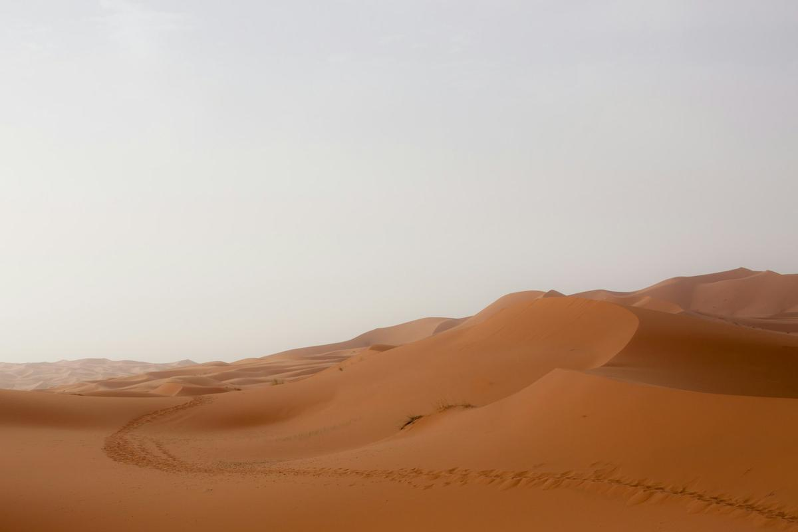
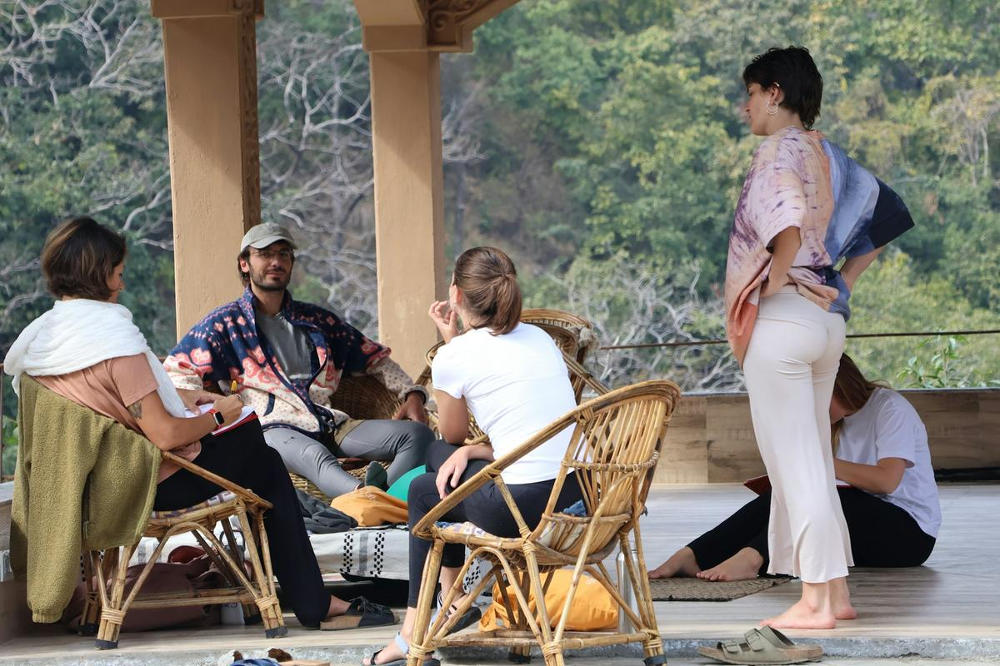

¿Qué viajero itinerante eres?
Son seis preguntas, te basta un minuto y no hay respuestas incorrectas: al final te decimos qué viajero eres y qué retiro es para ti.
Es viernes por la noche. Tú estás...
¿Qué es lo que más echas de menos ahora?
Una noche en tienda, sin ducha:
De viaje nunca olvidas...
Tu relación con la meditación:
Del viaje querrías volver con...
¡Tu perfil está listo!
Déjanos tu nombre y email: te enviamos tu perfil de Viajero Itinerante y algunos consejos para el viaje adecuado para ti.

El Explorador
Necesitas espacio, cansancio del bueno y cielos enormes. El silencio lo encuentras caminando, y las prácticas te llegan mejor después de un día en las dunas.

El Contemplativo
Te recargas bajando el ritmo. Necesitas un ritmo lento, comodidad por la noche y mucho tiempo para escucharte, mientras el paisaje pasa solo.
El Buscador
Tienes curiosidad por todo, fuera y dentro de ti. Te gustan las historias de los lugares, la gente que vive allí y las preguntas que se quedan después.

El Primer Paso
Llevas años queriendo tomarte un tiempo, pero una semana lejos te parece mucho. Perfecto: se puede empezar cerca de casa, con un fin de semana.
Prototipo: en este mock-up el email no se envía. En la web real iría a la newsletter, con el perfil como etiqueta.